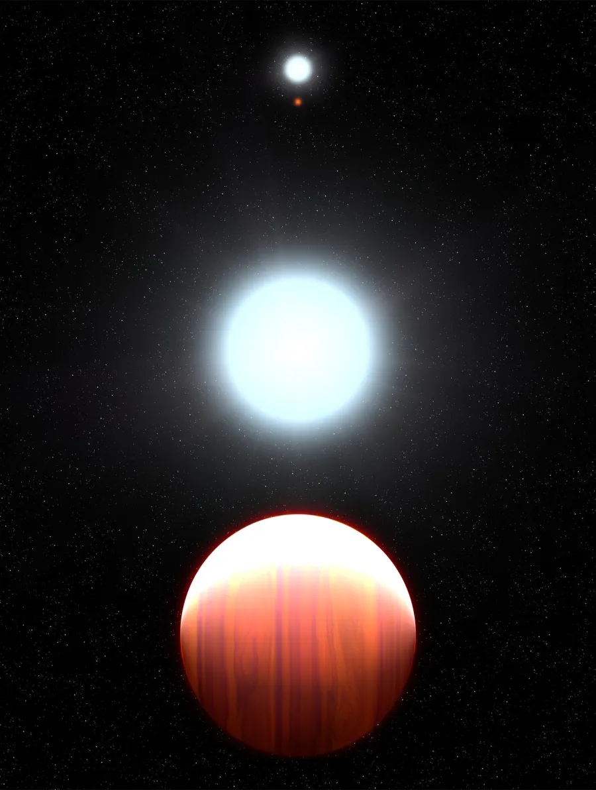

Oktober 2017
Kepler-13 Ab: Schnee aus Titanoxid auf der Nachtseite
Kepler-13 Ab gehört zu den heißesten bekannten heißen Jupitern: Auf der Tagseite herrschen mehr als 2.700 Grad Celsius. Der Planet ist laut ESA/Hubble etwa sechsmal so massereich wie Jupiter und wendet seinem Stern stets dieselbe Seite zu.
Hubble-Beobachtungen zufolge zieht die hohe Schwerkraft auf der Nachtseite Titanoxid nach unten, wo es als Schnee ausfällt. Es ist der erste Nachweis einer solchen „Kältefalle“ bei einem Exoplaneten. Weil das Titanoxid auf der Tagseite fehlt, wird die Atmosphäre dort mit zunehmender Höhe kälter. Das System ist 1.730 Lichtjahre entfernt.
Quelle: ESA/Hubble: "Kepler-13Ab (artist's impression).", 27.10.2017